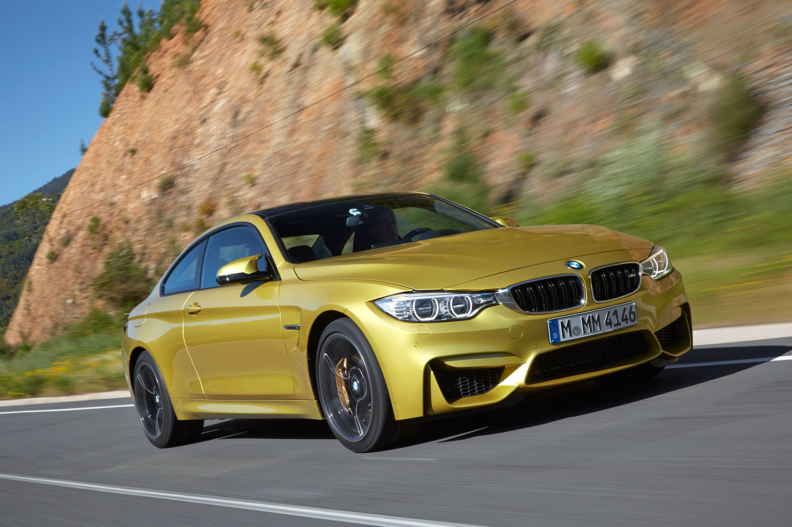
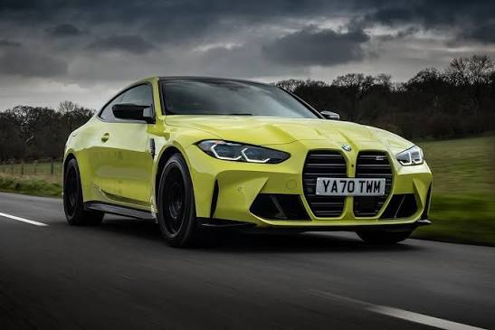

🔗 Читати детальніше на ВікіпедіїОпис та історія: Перше покоління M4, яке відокремило купе від класичного седана M3.

🔗 Читати детальніше на ВікіпедіїОпис та історія: Друге покоління спорт-купе з сучасною агресивною мовою дизайну.